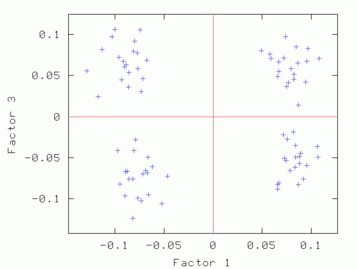

A note about "cluster" vs "class" terminology. It seems natural to call the group of points seen on a factor map a "cluster". Likewise, it seems natural to call the group of images denoted by those points a "class". However the boundary between "cluster" and "class" is fuzzy so both terms have been, and continue to be, used almost interchangably in the field.
| Name | Contents | ||
|---|---|---|---|
| ¤ | face_tmpl_stk | Face templates | |
| ¤ | face_nois_stk | Noisy faces | |
| ¤ | face_aver_stk | Average of the ten noisy face images for each template | |
| ¤ | face_varn_stk | Variance of the ten noisy face images for each template |
| |
| Face Templates | |
|---|---|
| Sample Noisy faces | |
Hints for: 'CA S'
Output files from 'CA S' and cas.spi:
| Name | Contents | File type | |
|---|---|---|---|
| ¤ | cas_ca_IMC | Coordinates of each IMAGE in the new vector space. | Text |
| ¤ | cas_ca_PIX | Coordinates of each PIXEL in the new vector space. | Text |
| ¤ | cas_ca_EIG | Eigenvector values. | Text |
| ¤ | cas_ca_SEQ | Image pixel values within the mask from all the images. Only useful internally within other 'CA' & 'CL' operations. |
Binary |
| ¤ | cas_ca_SET | Transposed data. Only useful internally within other 'CA' & 'CL' operations. |
Binary |
| In addition to the 'CA S' output files, cas.spi creates: | |||
| ¤ | face_mask.spi |
User-defined circular mask. | SPIDER image |
| ¤ | List of eigenvectors for each image for factors 1 and 2. | SPIDER document |
| ¤ | : | A SPIDER document file listing eigenvalues and the percentage of variance accounted for by each factor. |
| ¤ | : | A Gnuplot file to plot the histogram. |
| ¤ | : | A Postscript file containing the histogram. |
Creating Factor Maps to View Clusters
Once we know which eigenvectors have some meaning and which are from noise, we can use the output from CA S for clustering. The 'CA SM' operation creates 2D factor maps (graphs) of selected pairs of factors to visualize clustering (if any).
The procedure: casm.spi invokes the SPIDER procedure: factor_casm.spi three times, creating three different factor maps using 'CA SM' for different pairs of factors. 'CA SM' is run under the assumptions that you want image space with "ID's" to create PostScript plots.
Hints for: 'CA SM'The three factor maps below were created from image (IMC) factor maps using GNUplot. Postscript files are similar.
|  | ||
| Factor 1 vs. Factor 2 | Factor 1 vs. Factor 3 | Factor 2 vs. Factor 3 |
|---|
'CA SM' also works for pixel factor maps (_PIX)as well. The pixel factor maps below were created from a screen snapshot. The large number of pixels located in the center show that most pixels vary little if at all between eigenvectors.
| Factor 1 vs. Factor 2 | Factor 1 vs. Factor 3 | Factor 2 vs. Factor 3 |
|---|
With the "useful" eigenvectors known, we can more efficiently determine the representative clusters. Classification also allows compression of information with minimal loss. The 'CL HC' operation usually gives robust clustering because the user can control the clustering criterion and can alter the "weights" for each factor.
The procedure: clhc.spi invokes 'CL HC' which reads the CA/PCA files from 'CA S' and creates a dendrogram document file and dendrogram plot file.
Hints for: 'CL HC'Screen snaphots of the dendrograms from 'CL HC' for our face data set using clustering option 2 (complete linkage) and option 5 (Ward's method) (Click to see full-size):
| Complete linkage | Ward's method |
|---|
Dendrogram doc files affiliated with the above dendrograms:
| Complete linkage doc | Ward's method doc |
|---|
Alternative automatic classification methods using 'CL CLA', which is less controllable, and 'CL KM' , which may give spurious classes, are discussed in detail elsewere. These operations may be usefull for other classification applications, including classification using the _PIX files.
In a dendrogram a the junction of a vertical and horizontal line the joining of two classes below it. A representative reconstruction can be formed for each class with the 'CA SR' operation. The larger vertical bars signify a greater difference between classes. The many small differences at the bottom can be eliminated with an increase of the "% cutoff" setting. (The jpg file was obtained using screen snapshot.)
The operation 'CL HD' uses the dendrogram document file from 'CL HC' or 'CL CLA' to create a document file listing how many classes there for a given threshold and how many images there are in each class. This operation is similar to viewing the dendrogram in Web, setting a threshold, and recording the number of images and the number above each image.
The operation 'CL HE' uses the dendrogram doc file from 'CL HC' or 'CL CLA' to create a series of class selection doc. files (e.g. clhc_den_clas_001) , which lists the images which are assigned to each ot the classes.
The procedure: clhe.spi invokes 'CL HD', 'CL HE', and then 'AS R' to threshold the dendrogram produced by 'CL HC' at a theshold of 66%, then average together the 20 images in each of the resulting classes. The class averages are then placed in a SPIDER image montage: clhc_clas_montage.spi
| Class Montage (Threshold=60%) |
|---|
Web
can be used to view a dendrogram from
'CL HC' or
'CL CLA'.
Web will display
not only a usual dendrogram, but it also can annotate the dendrogram
with the average images of all the images below a given threshold,
and note the number of images in each average.
The document file: den_doc.dat
is an example of a dendrogram document file.
Screen snapshot of Web display of the complete linkage dendrogram truncated at 20% level. Note that all of the images are properly separated by head shape and eye direction. Mouth size is not so clear because it's eigenvalue is close to the eigenvalue for noise (Click to see full-size):
| Dendrogram snapshot |
|---|
Re-creation of sample images from eigenvectors can eliminate the noise in the reconstituted image, this also results in large data compression.
The procedure: casr.spi invokes 'CA SR' to re-constitute any image, or images, from the eigenvectors.
Hints for: 'CA SR'Below, is an single image from our sample data set and four separate reconstructions using the first four eigenvectors. (The "halo" of noise and dark corners is a result of the masking function in the procedures: face.spi and makefaces.spi) which were used to create the noisy face sample data. ) It is difficult to see what traits the original image has because of noise. With the first three single eigenvalue reconstructions we can see that it has an oval head, with eyes looking left, and a small mouth. The fourth eigenvector does not "add" anything to our knowledge of the image because there are only three attributes that carry information. Therefore the fourth carries only noise.
Below is the sample image again, and a reconstruction from the first three eigenvectors combined. The image is from the 69'th prototype image shown in the source data area.
Below we have the same "protoimage" images used to create the source data, a sample image from each protoimage,and we also have re-created the noisy samples using each eigenvector. The first row is the protoimages used to create the 80 sample images, and the second row consists of a sample image created from the protoimage above it. The third row is each sample image re-created with only the first eigenvector used. The next row includes the second eigenvector, and the last includes all relevant eigenvectors.
The operation: 'CA SRA' can create images or pixels that were not actually captured, using eigenimages. To do this, the eigenvalues must be given. This can be useful to interpolate images in between classes.
To choose what values to use for eigenvalues, use the factor maps. If you try to use a value outside the range of values for an eigenvalue, the results will be difficult to predict and interpret.
The procedure: casra.spi invokes 'CA SR'.
Hints for: 'CA SRA'The images for eigenvector 1 equal to -0.1 and 0.1 are shown in the first two images. They "make sense" in that this vector controls headshape only. These values were chosen because they are the most extreme values shown on the factor maps. But the images for eigenvector 1 equal to -1 and 1,the last two images, do not represent "extreme" roundness like one might think. This is because these values are outside the range that they actually exist, i.e. the factor maps.
The following virtual images were created by changing only one eigenvalue at a time from -0.2 to 0.2 at regular intervals. The top row is eigenvalue one, and the bottom row eigenvalue three. Along each row all other eigenvalues were held to zero. The center column is identical because it is at this point that the varrying eigenvalues are equal to zero. Reconstitution with all eigenvalues set to zero is equivalent to reconstiting the average of the series. If reconstitution of each indiviual eigenvalue had progressed to one, the result would be the first three images directly above. Reconstitution of the three eigenvalues together will result in the fourth image above.
The procedure:
casramontage.spi
was used to assemble the montage:
The operation: 'CA SRE' creates eigenimages from 'CA S' outputs. With eigenimages, the user can easily see what the computer has determined as the factors to classify images by.
The procedure:casre.spi invokes 'CA SRE'. It assumes that if you want more than one factor, they are continuous. Also assumes that you are using CORAN output. Both of these assumptions are in the procedure file, not the operation. Edit the procedure file to change them.
Hints for: 'CA SRE'Sample results:
Use the 'CA SRD' operation to see the different eigenimages that are used to recreate images.
The procedure: casrd.spi invokes 'CA SRD'. Note that it is similar to casr.spi except for minor changes.
Hints for: 'CA SRD'
The first image below is the average of all 80 noisy sample face images.
The next three are the difference image for each useful
eigenvector for one image. The dark slivers in the first
eigenvector image show that in order to obtain the correct head
shape for this image, we must add black to either side of
the face. Similarily, for the eyes we would make the left side
of each eye socket brighter, and the right side darker. From
the fourth image this image has a wide mouth .
Below is the average of all the images as well as the composite difference eigenimage from above. When we add (superimpose) these together we get the third image, a re-creation of the original sample image. However, the re-creation has no noise. This is because we only used the first three eigenimages. If we included the other five, then we would have re-created the sample image, with noise.
The operation 'CA SMI' can be used to separate a series of images into active/inactive clusters. It appears that this can actually perform operations on a series of images using the 'CA S' files from another series. This has not been tested. If the images used in 'CA SMI' will be used with their 'CA S' run, it is a good idea to create a Postscript map before running 'CA SMI' for comparison later.
The procedure: casmi.spi invokes 'CA SMI'.
Hints for: 'CA SMI'
Below are the 'CA SM' maps with no 'CA SMI' input, and below that are 'CA SM' maps with 'CA SMI' input. Note the labeled images are the same in all three, but the axis switch with an odd numbered factor. This axis switch is caused by using non-transposed data set. In order to have 'CA SMI' run on this data, forced 'CA S' to not transpose the data, with the "CN entry". Because of this, 'CA SM' reads in the images differently from the transposed data. Be sure to take note of axes if using 'CA SMI' -> 'CA SM'
| Factor 1 vs. Factor 2 | Factor 1 vs. Factor 3 | Factor 2 vs. Factor 3 |
|---|
'CA SM' maps with no 'CA SMI' input
| Factor 1 vs. Factor 2 | Factor 1 vs. Factor 3 | Factor 2 vs. Factor 3 |
|---|
'CA SM' maps with 'CA SMI' input
Using Web you can view a factor (correspondence) map and select images which are similar using a "lasso" interface. Then the average of that lassoed "class" is computed and can be viewed or stored as a new image. Also, a document file can created listing what class each image was placed in. I believe that only images can be used, not pixels.
How To Use The Web Factor MapThe doc. file: sdc_doc.dat is the result of running 'SD C' on a _IMC file. It lists the image number and factor co-ordinates of each image.
The following is a is a screen-shot of Web Corr-map run:
Note the placement of the average images. The upper-right image is overlapped with it's respective mask. We can also see what two traits were being compared in this factor map, head shape and eye direction.
The file: web_docimg001.dat contains the data created with the "Save images in Doc. file" option. It lists the image number, X and Y co-ordinates and the order of class it was formed from. This particular class was the third formed, but the first image document list.
The procedure: webdendro.spi
invokes 'CL CLA'' so that a new dendrogram
document file is created, with a different lower threshold.
The procedure: rename.spi can be used to change the extensions of a whole series of images. Is not a problem if follow hint number three above.
Source: docs/techs/classif/tutorial.html Last update: 10 Sep 2013
{kind=link}
{kind=link}
{kind=link}
{kind=link}
{kind=link}
{kind=link}
{kind=link}
{kind=link}
{kind=link}
{kind=link}
{kind=link}
{kind=link}
{kind=link}
{kind=link}
{kind=link}
{kind=link}
{kind=link}